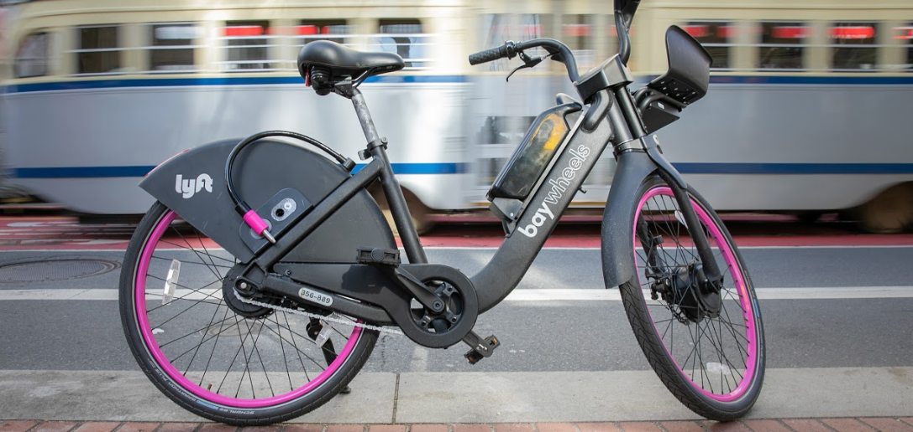
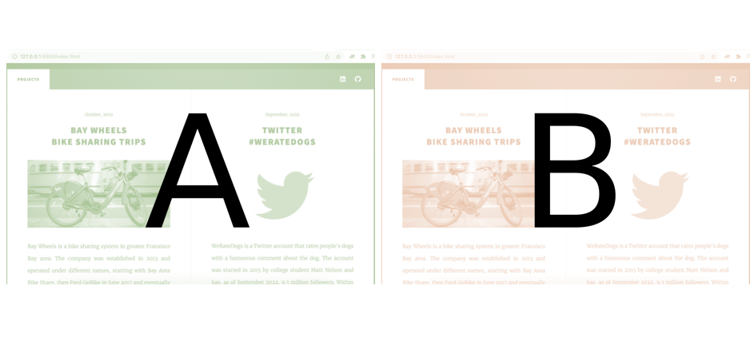
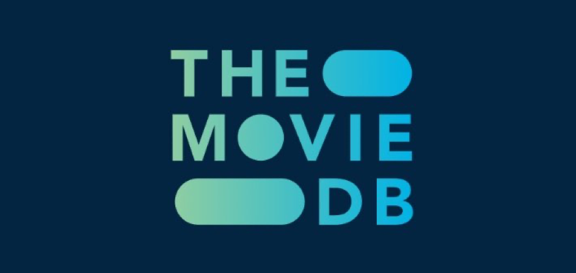

October, 2022
Bay Wheels
Bike sharing trips

Bay Wheels is a bike sharing system in greater Fransisco Bay area. The company was established in 2013 and operated under different names, starting with Bay Area Bike Share, then Ford GoBike in June 2017 and eventually they became Bay Wheels in June 2019. In this project I analyzed the data from 2019, focussing on the frequency and the duration of bike trips throughout the day, week and year, and for different user types (customer/subscriber).
Project focus: Data Visualization
September, 2022
Twitter
#WeRateDogs
WeRateDogs is a Twitter account that rates people's dogs with a humorous comment about the dog. The account was started in 2015 by college student Matt Nelson and has, as of September 2022, 9.3 million followers. Within the first 2 years the account reached 3 million followers. I looked into the most common dog breeds on WeRateDogs and the most popular tweets posted during these first two years after foundation, from November 2015 till August 2017. In addition, I analyzed their rating system and to what extent a dog's rating says something about its favourability.
Project focus: Data Wrangling

A/B testing examines the performance of 2 different versions of a webpage or app, to decide on the better of the two. In this project I analyzed the A/B test results of an e-commerce website.
Project focus: Practical Statistics
June, 2022
The movie database
(TMDB)

TMDB is a user-editable database for movies and TV shows. I analyzed TMDB's data of 10.000 movies released between 1960 and 2015 and questioned whether the popularity of movies (according to TMDB) can be predicted by movie budget, genre and duration.
Project focus: Data Exploration
[This project is being updated - Available soon]